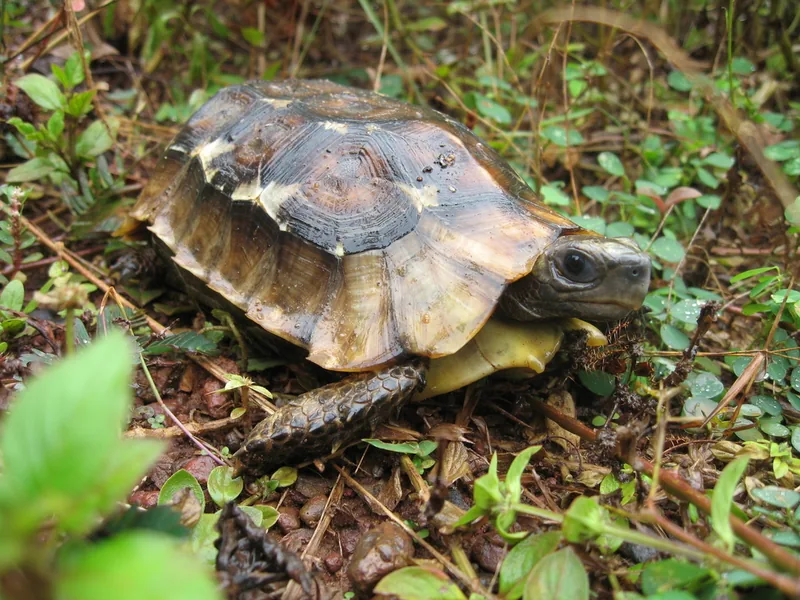

西アフリカ熱帯雨林に生息するセオレガメ属で、同属のベルセオレガメより管理が難しい上級種。暖かく湿った森林の環境と、植物・キノコ・動物性食材を組み合わせた餌を用意します。2026年3月5日からCITES附属書I・国際希少野生動植物種となり、国内での取引にも登録等の要件があります。
資料に記録された最大甲長：オス25.1cm・メス25.8cm（直線甲長）。TTWG 2025, p.339。通常の成体サイズや、すべての個体が到達する大きさではありません。

1年後の甲長は10〜14cm程度。後甲のヒンジ機構が完成してくる時期で、驚くと後甲をパタンと閉じる独自の行動が見られる。高温多湿の熱帯雨林環境を好み、動物食傾向が強い雑食性のため食事の多様性が求められる。
10年後は甲長15〜22cm、重さ500〜1kg程度が多い。セオレガメ属の中では中型で、120cm級のケージが目安。数十年の飼育を見込む種で、熱帯系の安定した温度・湿度管理が長期飼育の鍵になりやすい。
ホームセオレガメは雑食傾向が強く、草・葉だけでは栄養が偏りやすい傾向がある。ミミズ・昆虫などの動物性食材に加え、キノコや植物性の食材も組み合わせる。また高温多湿の熱帯雨林型環境は維持コストが高く、温度・湿度管理機器への投資と電気代を事前に見積もっておくと計画が立てやすい。
2026年3月5日からCITES附属書Iに移り、日本でも国際希少野生動植物種に指定されました。国内での売買・譲渡等は原則禁止です。登録を受けた個体を取引する場合は、有効な登録票を個体と一緒に引き渡します。購入時は個体と登録票の両方を受け取ってください。受け取った人は30日以内に譲受けの届出が必要です。国内CBという説明やインボイスだけでは、登録票の代わりになりません。
規制前から適法に入手した個体を、そのまま飼い続けることは禁止されていません。取引や登録の手続きは自然環境研究センターの案内と譲受け届出の手順をご確認ください。
ナイジェリア・カメルーン・コンゴの熱帯雨林に生息。高温多湿の林床環境に特化。ベルセオレガメより動物食傾向が強く、ミミズ・昆虫・カタツムリ・キノコを積極的に食べる。
暖かく湿った森林の環境を必要とします。夏も過熱を避け、冬は室温と床面の冷え込みを確認します。湿度を保つために換気を止めるのではなく、床材の湿り気・空気の温湿度・隠れ家の状態を一緒に見て調整します。
温度には資料差があります。Tortoise Trustの飼育案内はおおむね24〜27℃、TFTSG（2013）の飼育節は気温27〜32℃を挙げています。いずれもバスキング地点の32〜38℃を示したものではありません。資料の数字だけで設定温度を決めず、ケージ内の温度差と個体の様子を確かめます。温度計は暖かい側・涼しい側・隠れ家に置き、夜間の最低値も確認してください。
← 横にスクロールできます
| 種名 | 甲長 | 難易度 | 必要ケージ | 特徴 |
|---|---|---|---|---|
| ホームセオレガメ このページ | 18〜25cm | 上級 | 120cm〜 | 本種・熱帯・最難 |
| ベルセオレガメ | 15〜25cm | 上級 | 120cm〜 | 同属・やや易しい |
| エロンガータリクガメ | 25〜33cm | 中〜上級 | 90〜120cm | 多湿・比較対象 |
| インプレッサムツアシガメ | 25〜31cm | 上級 | 90〜120cm | 山岳多湿・同難度 |
この種の終生飼育に必要なケージの目安：120cm級（床面積優先・高湿度維持）
子ガメのうちは、これより小さいケージでも飼えます。向きを変えにくい、隠れ家や水入れを置くと歩ける床がほとんど残らない、といった様子が見えたら広げる時期です。見直しのサインと甲長の測り方 →
サイズは本ページの飼育環境データにもとづく目安です。体格や性別、設備の置き方、飼う頭数によって必要な広さは変わります。購入前に、上のKIDで甲長に合う候補と使用条件も確認してください。
ホームセオレガメは西アフリカの湿潤な森林の種で、リクガメでは例外的なほど高湿度が必須・乾燥に極端に弱いタイプです。日本の梅雨〜夏もケージ内の過熱に注意し、冬は乾燥と冷え込みの両方を防ぎます。迎える際は、登録票と個体の対応を確認したうえで、飼育歴や食べている餌、健康状態を販売者に確認してください。
ノルウェーのVKMの評価資料では、飼育下の寿命を60年と推定しています。Luiselliら（2021）を引用した値ですが、60年間追跡した個体の記録や、平均寿命の求め方は載っていません。
出典：VKM CITESリクガメ類リスク評価（2024）（2026年11月13日確認）
飼育温度・湿度などの数値は国内飼育の一般的な目安を含みます。資料が少なく、はっきり分かっていない点もあります。